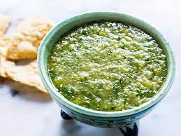

Salsa Verde

Salsa Verde is a tangy and mildy spicy salsa
This salsa is meant to add subtle spice and acidity to any dish it is added to. It pairs well with cooked meats such as steaks and sausages. For chunkier salsa use a traditional molcajete to combine the ingredients
Ingredients
- tomatillos
- onion
- garlic
- salt
- Jalapenos or Serranos
- limes
- cilantro
Steps
- Halve the tomatillos, onions and chile peppers of choice
- place on a roasting tray and lightly drizzle with oil and salt
- roast until lightly charred
- place everything in the roasting pan into a blender along with the cilantro and a squeeze of lime juice
- blend and then add salt to taste
Back to homepage